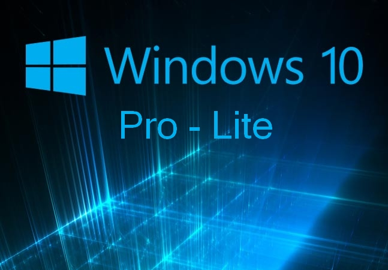
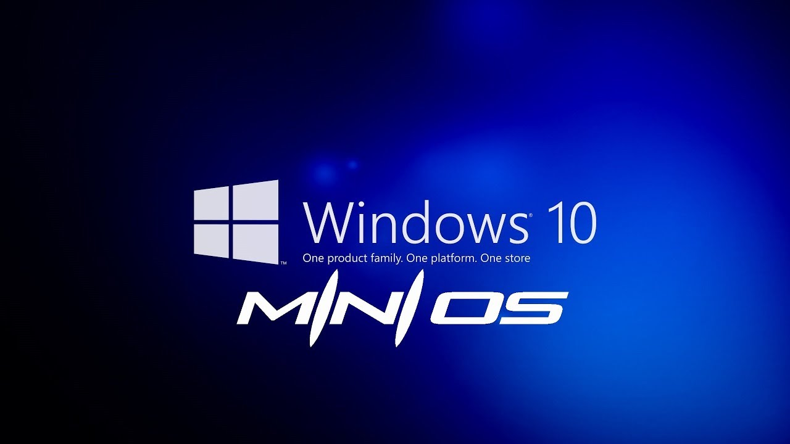

¿Será posible tener Windows 10 en una computadora de bajo recurso? pues hay versiones de Windows que Microsoft lo confirma para computadoras de bajo recurso y puede ser ideal para ti sin tener que también tener problemas a futuro, como por ejemplo problemas con las actualizaciones de Windows que unos de los casos más grande de problemas de computadoras, por eso tecno expand te va a orientar y ofrecer las soluciones y condiciones que necesitas para tener tu computadora sin problemas a futuro.
Aquí hay 2 versiones de Windows 10 que puede ayudarte en no tener problemas de lentitud o de congelación o lo que sea que te fastidie al momento de usar tu PC, y como les digo tecno expand ha comprobado las dos versiones y le ha ido de maravilla con los clientes que nos topamos el primero se llama Windows 10 lite.
esta versiones estará dirigida a portátiles de bajo coste y bajo consumo. Windows Lite estaría basado en Windows Core OS y sería un sistema que estaría preinstalado en nuevos dispositivos, es decir, no podría conseguirse esta versión de Windows de manera separada. Un sistema que además pretende ser muy ligero, con arranque instantáneo y siempre conectado que podría ejecutarse también en cualquier tipo de CPU o procesador, ya que todo apunta a que también llegaría optimizado para los procesadores Snapdragon de Qualcomm.
MiniOS es un grupo de ajustes, cambios y personalizaciones que aplico a varias ediciones de Windows. Esto lo hago buscando velocidad, estabilidad, ligereza y mejorar la apariencia y comodidad del usuario. Hay versiones para todos los equipos, desde el más antiguo hasta el más reciente. El sistema se ha personalizado/mejorado/optimizado tanto visualmente como funcionalmente para llegar a esos equipos de amantes de la tecnología que al igual a mí, no se sienten conforme con las versiones oficiales.
Y si quiere una diferencia de cada pues tienes sus características distinta pero el objetivo es el mismo la rapidez del ordenador portátil o computadora de mesa, al fin al cabo queremos algo que sea rápido y ligero si quiere saber como instalar un sistema operativo nosotros mismo tecno expand nos dedicamos por videollamada en Instagram, WhatsApp, o Facebook podemos orientarte en vivo sin compromiso te vamos a guiar paso a paso para que hagas una instalación de Windows de manera exitosa y tu computadora será una rapidez sin necesidad de comprar algo adicional pero claro es importante mejorar el hardware de tu pc eso ayudaria el doble. Si es así puedes comunicarte con nosotros en Facebook o Instagram.
Quizas te puede interesar Este video